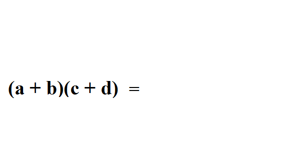
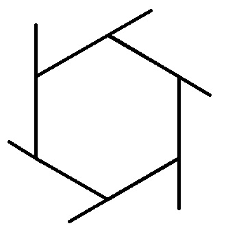
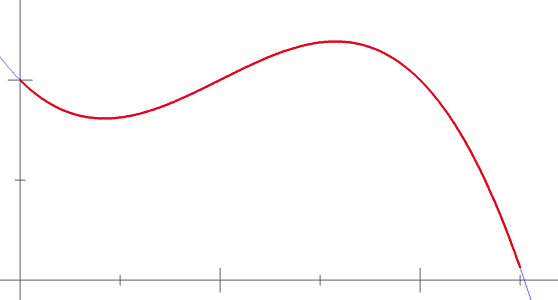

「正直に言うと、数学は一般的に簡単ではありません。しかし、問題を克服し、新たな理解の高みに達したとき、それが数学があなたに与えてくれる報酬なのです。」——Danica McKellar
数学は難しい科学です。しかし、科学者が宇宙を説明するために使う言語である以上、私たちはそれを学ばざるを得ません。以下のGIFアニメを見てみましょう。さまざまな数学のテクニックを理解するための視覚的な方法を提供してくれます。1、楕円の描き方

2、楊輝三角（パスカルの三角形）問題の解法

3、"FOIL"を使って二項式の乗算を簡単に解く

4、対数解法のテクニック

5、行列転置のテクニック

6、三平方の定理

7、多角形の外角の和は常に360度になる

8、円周率π

9、1ラジアンとは、半径と同じ長さの円弧が中心に対してなす角のことです

10、Y軸にサイン（赤）、X軸にコサイン（青）を使うと、XY軸平面上に描かれる環形は下図（黒）のようになります

11、前の原理と同じですが、もっと簡単です

12、これはsinとcosを三角形に応用したものです

13、コサインはサインの導関数です

14、正接線

15、同上ですが、裏返して見ると、より理解しやすくなります

16、数式をデカルト座標から軸座標に変換する

17、放物線の描き方

18、リーマン和（Riemann sum）は曲線の下の面積にほぼ等しい

19、双曲線

20、双曲線を3D形式で表現すると、信じられないかもしれませんが、完全に直線で描かれています

このような効果にすることもできます：

出典:海外IT評論